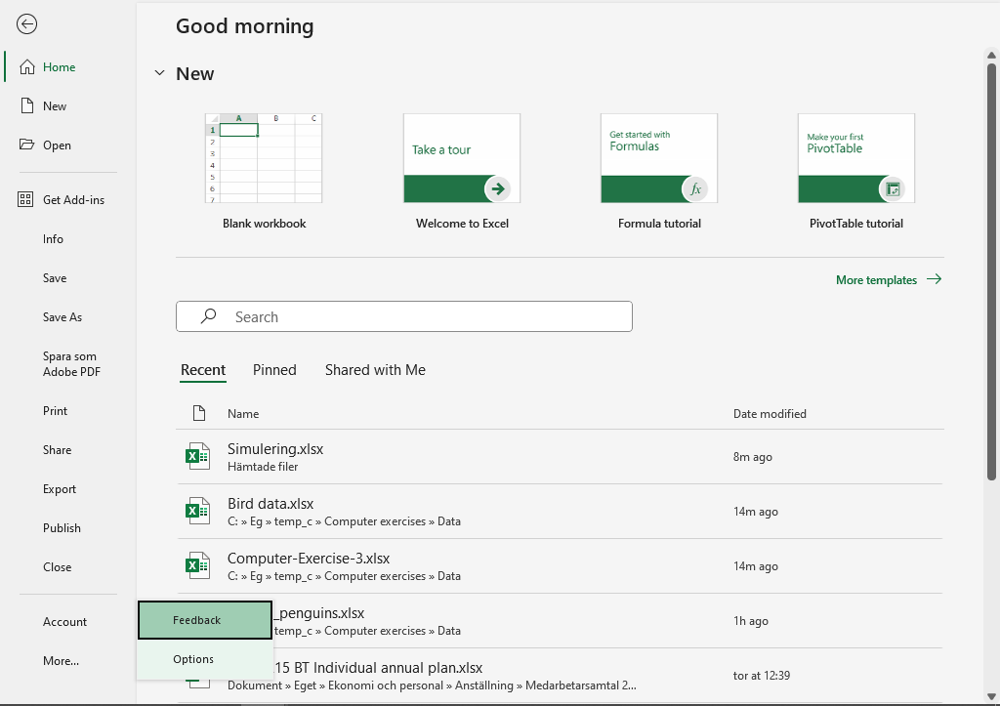
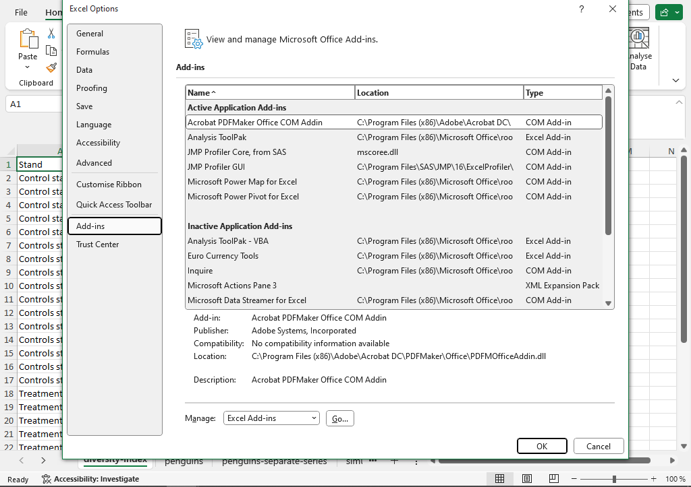
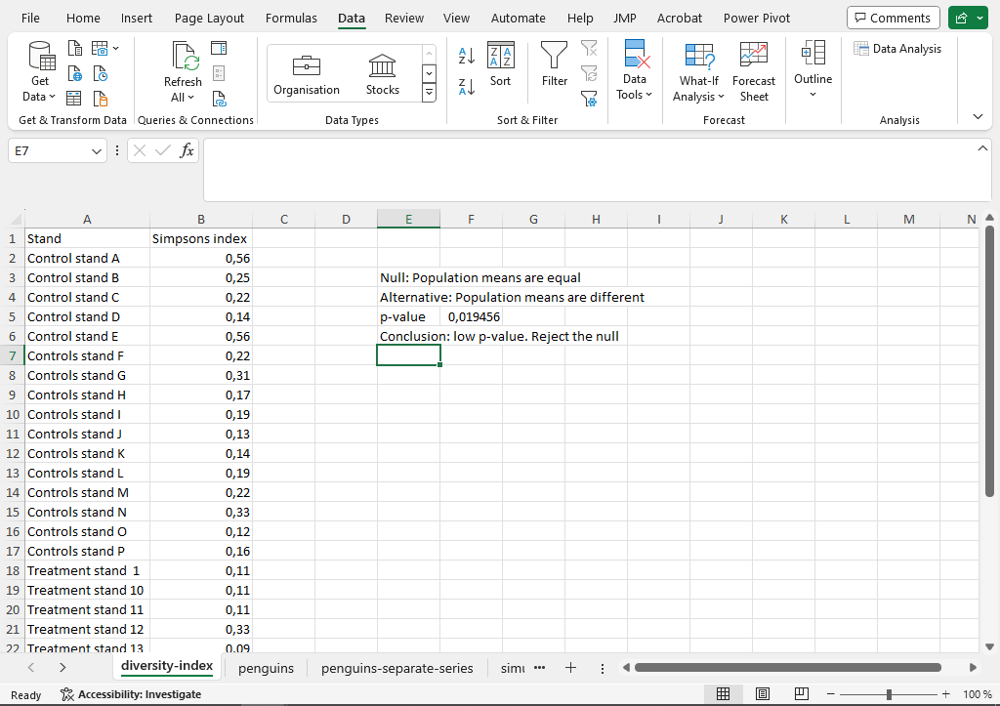
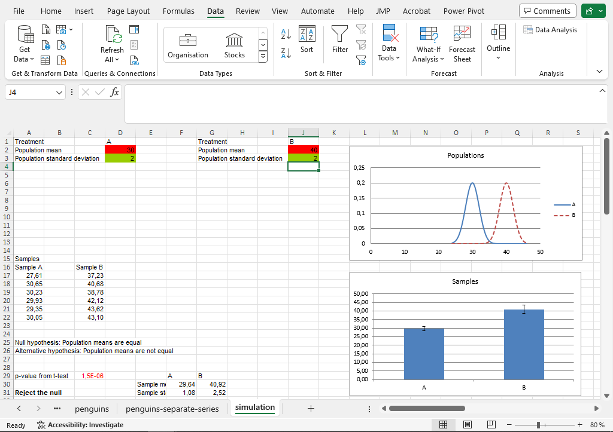
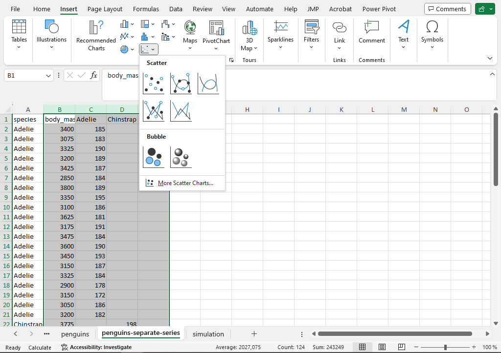
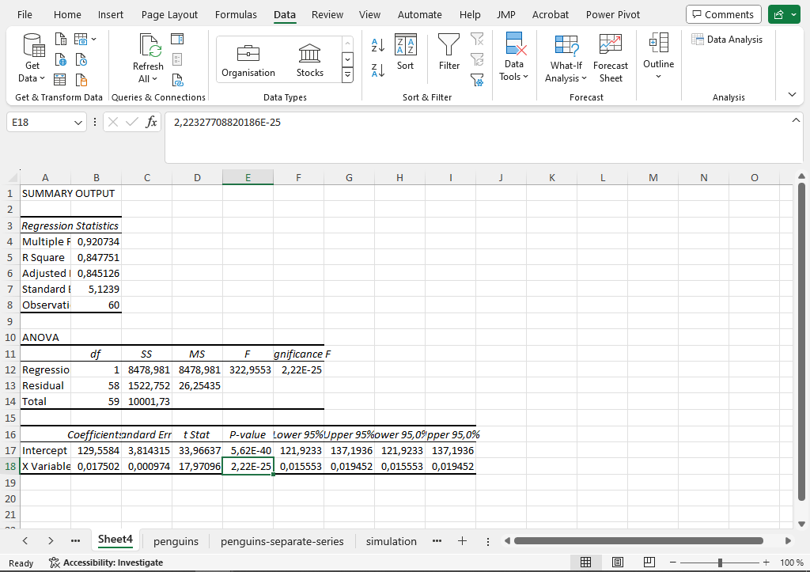

Statistics Exercise 2. Scientific graphs, inference and regression
1 Introduction
In this exercise we turn toward more statistics-specific graphs and calculations. In the first part we look at three graphs which are common in scientific presentations: the bar chart with errorbars, the boxplot, and the histogram. In the second part we look at how ecological population data can be analyzed with statistical tests.
In the first part we work some example data on global socio-economics. The source is the Gapminder foundation. In the second part we work with some scientific data on bird species at different sites.
2 Scientific graphs
2.1 Barchart with errorbars
In the previous exercise we saw the humble barchart, where a summary measure like a mean is shown as the height of a bar for each of a few different groups. In scientific publications the barchart is almost always developed using an errorbar which shows the dispersion in the distribution measured with a standard deviation or the precision of the mean estimate measured with a standard error.
The first step is to calculate mean values and standard deviations. We will do this for each year in the Gapminder data using a pivot table.
- In the Gapminder.xlsx file, click anywhere in the data (such as
A1). Then go to the Insert ribbon and select PivotTable. The dialog window should say that the input data is the full dataset and that the pivot table is printed in a new sheet. Click OK to produce an empty table. - The new window should have the pivot table field to the right. Drag the variable year to Rows and liveExp to Values. The default is to calculate the sum, but this can be changed to the mean by clicking the small arrow next to Sum of lifeExp, selecting Value Field Settings, and then taking Average in the list of functions.

- In a similar way we can add the standard deviation to the table. Drag lifeExp from the list of variables to Values. Go to Value Field Settings and select StdDev for the standard deviation.
- It is possible to create a bar chart using a PivotChart, but since we need to add an errorbar we will use a trick to use a standard graph. The trick is to create a parallel non-pivot table by referencing the pivot table. Click an empty cell such as
G4and link the first data cell in the pivot table by writing the formula=A4. Auto-fill that cell to the right for each column and down for each row (except for the Grand Total). Give this new table suitable headers (Year, Mean and SD).

- Create the bar chart by marking the columns with Year and Mean, then going to the Insert ribbon and selecting the graph icon for a barchart.
- Errorbars can now be added by clicking the green plus to the right of the graph, clicking the arrow by Error Bars and selecting More Options. In the margin window which now appears select Custom and Specify values at the very bottom. In the dialog window remove the text and select the values in the column SD. Do the same for both Positive and Negative. Click OK.

One good final step is to test if the connection is correct by changing one of the standard deviations to something large. We should then see a change in the graph.
2.2 Boxplot
A boxplot visualises the distribution of data as a box with whiskers. The box splits the observations into four groups: the lowest quarter of values is below the box; the second lowest is in the box but under the middle bar; the second highest quarter is in the box above the bar; and the highest quarter is above the box. It is also possible to visualise extreme values as dot and to add a marker for the mean value.
In modern Excel versions it is very easy to create a boxplot. Here we create a boxplot for life expectancy over time.
- In the sheet with all data, mark the columns for year and lifeExp. Go to the Insert ribbon and find the small graph icon for Statistic Chart (typically in the middle row and middle column of icons). Select Box and Whisker to create a boxplot.

Clicking one of the boxes opens a formatting window to the right. The default in Excel is to show the mean value as a cross.
Make sure you understand the construction of the boxplot and how it displays the quartiles of the data. The boxplot can give a quick idea of the distribution of the data points. For life expectancy the data is quite symmetric, but if we look at gdp per capita the boxes will be more skewed, indicating a longer right tail in those distributions.
2.3 Histogram
A histogram shows the distribution of a variable by dividing the x-axis into intervals (bins) and letting bars show the number of observations in each interval. We illustrate this using some wide data in the sheet Wide-lifeExp.
- Select the column with observations from 1967. Go to the Insert ribbon and find the graph icon for Statistic Chart. Select Histogram.

- The resulting histogram has automatically selected intervals on the x-axis. To change these, click anywhere in the x-axis. In the window to the right, find the icon with three bars and the section with Axis options. Set the bin width to a suitable value (for example 5) and set the value in Underflow bin to a value which is larger than the lowest value in the data.

3 Ecological data
3.1 Ecological population data
We will now look at some real-world ecological data from a study at the Southern Swedish Forest Research Center. The file Bird data.xlsx contains observation numbers for different bird species. Each column is a species and each row is a site. It is natural that we want to compare the distribution of species between sites, but since some sites will have larger number overall, an initial step is to transform the observations from counts to proportion by dividing by the site total.
- Copy the data sheet by right-clicking the sheet name at the bottom and selecting Move or Copy.
- In the new sheet click the first data observation in
B5. For each cell we want to take the cell value and divide it by the sum total, which here is the sum of the row. We can do this for the first cellB5with the formula=BLAD1!B5 / SUM(BLAD1!B5:BLAD1!AD5). Note that the sheet name followed by!indicates a different sheet than the current one.

- If we want to autofill this cell downwards and to the right we have to be a bit careful with which cells should be absolute (i.e. fixed with
$) and which should be relative. When we autofill to the right, we want the numerator cell to change, but the we want the columns to be absolute in the denominatorSUM(). Also, when we autofill down, we want the rows to always change. The formula should therefore be=BLAD1!B5 / SUM(BLAD1!$B5:BLAD1!$AD5). Autofilling that formula both to all columns and all rows will give proportions for each site.
Cells in Excel can be formatted for individual fonts, color background, font color and many other aspect. Here we use this to make the data sheet into a heatmap.
- Mark the data cells in
B5toAD36. Go to the Home ribbon and find the icon for Conditional Formatting. Go to Color Scales and pick any color scheme. The result is that each cell has a color indicating the magnitude of the proportion. If one wants to change the width of columns one can drag the black line between column headers (in the grey area with letters). One can zoom out using the slider at the bottom right.

The heatmap can be really useful to get an idea of patterns in the data, for example which species are more common and if there are differences between the two groups of sites (treatment and control sites).
3.2 Diversity indices
It is common to reduce the data from multiple variables (one per species) to a single variable. This can be done using diversity indices. There are a few different types of indices. Here we look at Simpson’s index, which is one minus the sum of squared proportions.
- Go to the first empty column
AE. We want to calculate one minus the sum of squared proportions for each site. A square sum can be calculated with theSUMSQ()function. Here we get=1-SUMSQ(B5:AD5), then autofilling down for each row.

- Add a Conditional Formatting to the index column. Is there any indication of difference between treatment and control sites?
- The diversity index can be illustrated with a boxplot. In order to do this we want one column which specifies the type of site and the numerical column of index values. In the first column we have an indicator of site type, but there is a unique identifier, so it cannot be used directly in a graph. Look into using the function
LEFTto extract the first letter of the first column. Then construct a boxplot showing each of the two site types. The easiest way to construct a boxplot is to have the numerical columns to the right of the categorical column; one quick way to do that is to copy the numerical column and paste it to the right.

LEFT function to extract the first letter from the column with site id.4 Adding an add-in in Excel
We move on to look at the calculation of p-values in Excel. One way to do this is by using an add-in called Analysis ToolPak. This needs to be activated before use. The exact way to do this may differ a bit between Excel version.
- Open an empty Excel workbook. Go to File in the ribbon at the top. Go to Options at the bottom of the list to the left.

- In the new window, find Add-ins in the list to the left. This will give a page showing the current active and inactive add-ins. At the bottom of that page, click Go…, then check the Analysis ToolPak and click OK. Go back to empty sheet and go to the Data ribbon. If the add-in has been successfully added there should be a button to the right of the ribbon with the name Data Analysis.

5 Comparing groups
One fundamental use of statistics in the science is to test hypotheses using a method called null hypothesis significance testing. One example of this is the two-sample t-test. Two hypotheses are set up: a null hypothesis which states that two groups are equal in population mean and an alternative hypothesis which states that they are not equal. Based on underlying statistical theory it is possible to calculate a p-value. The p-value is the probability of getting a more extreme difference between the two groups than the difference we are observing. If the data is completely in line with the null hypothesis the p-value is one and if the data is very far from the null hypothesis the p-value is near zero. A p-value below 0.05 gives that the null hypothesis is rejected and that there is a significant difference between the groups.
At the end of the last computer exercise we calculated diversity index for each site in the bird experiment. We saw that there was some visual difference between the treatment group and the control group. Let us now do a formal test to see if this difference is significant.
- Download the Excel file Computer-exercise-3.xlsx from the Canvas page. Find the sheet bird-tree-experiment, which contains the indices per site. This data is in what we would call long form with each site one row.
- For clarity, state the hypotheses in an empty area next to the data. The null hypothesis is that the two groups have the same population mean diversity, while the alternative is that there is a difference in population means.
- The p-value of a test can be calculated in a few different way. The most straight-forward is to use the
T.TESTfunction. In an empty area below the null and alternative hypothesis, writeT.TEST(F2:F17;F18:F33;2;2). The function has four argument:
- the first argument
F2:F17is the data for the first group, - the second argument
F18:F33is the data for the second group, - the third argument, here a
2, states that the test should be two-tailed which means that we are testing both for an increasing effect of the treatment and for a decreasing effect, - the fourth argument, here a
2, sets the type of tests. Here we want a test for two-samples with an assumption of equal variances.
- The result of the
T.TESTfunction is the p-value. Interpret the p-value. Is there a significant difference between the control and the treatment? What is the interpretation of this in terms of the actual example?

T.TEST function.A t-test can also be done using the Analysis ToolPak. This gives a will give some additional information as well.
- Go to the Data ribbon and click the Data analysis button to the right.
- Find the method called t-Test: Two-Sample Assuming Equal Variances and click OK.
- In the dialog window select the observation from the control as the first range and those of the treatment as the second range. Set the hypothesized mean difference to zero. Let the output be in a new sheet. The output shows the mean, variance and number of observation of both variables. The pooled variance, df (for degrees of freedom), t Stat and the two t Critical values are measures used when calculating the test. P(T<=t) one-tail is the one-tailed p-value (which is rarely used) and P(T<=t) two-tail is the two-tailed p-value. The latter should be the same as that given by
T.TEST.

- The sheets labeled teabags (and a year) contain the data from the teabag decomposition experiment. It is sorted by green/red tea. Use this data to test for a difference in decomposition between red and green tea.
The hypothesis test is not perfect. It is possible to have actual population differences that are not captured by the test, as well as equal populations which by pure chance result in samples which give a significant difference. Of course, we cannot know this since we cannot observe the actual populations, but we can understand this phenomena using simulations.
6 Test outcomes through simulations
The sheet simulation contains a case where samples are generated from known populations. The samples are randomly generated by Excel. To make a new draw one can press delete while marking an empty cell.
At the top of the sheet one can set the mean and standard deviations of two normal distributions. These are the distributions from which the random samples are drawn. Below that the two distributions are illustrated as curves. Further below we see the two random samples - six from each population. Below that is the test information. We can see the p-value and a text stating the conclusion of the test as accepting or rejecting the null hypothesis. As always the null hypothesis is that the two groups have the same population mean.
- Make sure the populations have the same mean (say 30 for both). Mark an empty cell and press delete to generate a new random sample. Note the p-value. Since we set the populations to be equal, the correct outcome is for the test to accept the null hypothesis. This will however not always happen. Re-do the random sample forty times and note how often the test rejects the null hypothesis.

- Next let the populations be quite difference. For example one population can have mean 40 and one population mean 30, with both standard deviations being 2. Re-do the random sample a few time and note how often the test reject.
- Finally, set the populations to being similar but with some overlap. This could for example be means of 30 and 31 and both distributions having standard deviation of 2. This is a case where we would like the test to reject the null hypothesis since there is an actual difference between the populations. This will however not always happen. Re-do the sampling a few times. Is it common for the test to accept the null hypothesis?

These two possible errors are known as type I and type II, with type I being the case of rejecting a true null hypothesis (a low p-value even though the populations are the same) and type II being the case of accepting a false null hypothesis (a high p-value even though the populations are different). The hypothesis tests are constructed so that the probability of a type I error equals the significance level, so in most cases this risk is five percent.
7 Relations between numerical variables
We often want to capture the relation between two numerical variables. It could for example be the effect of soil pH on teabag decomposition, or the relation between time and tree height. There are two fundamental methods for this. Correlation, which gives a measure between -1 and 1 of how strong the connection between variables is, and regression, which models one variable (a response) as a function of another (an explanatory variable).
7.1 Correlation
The correlation between two variables can be calculated with the function CORREL. The input are the two ranges of cells and the output is the correlation measure. Here we calculate the correlation between flipper size and body size from a data on penguins measurement. This is an extract from the Palmer penguins data, a commonly used example data. See allisonhorst.github.io/palmerpenguins for additional information.
- Go to the sheet penguins. It contains data on species and various size measurements for sixty penguins. Go to an empty cell beside the dataset, for example
L2. Write the formula=CORREL(E2:E61;F2:F61). The output should be the correlation between flipper length (the E column) and body mass (the F columns). Is there a positive or negative correlation? What is the interpretation of this in terms of the original variables?

CORREL.- Use the correlation function
CORRELto calculate the correlation flippers and body mass for each of the three species. Are these correlations larger or smaller than the overall correlation? - The difference between groups can be illustrated with a scatterplot with different colors for different species. This requires a that the data is given as different series in the graph, which can be done by separating them into different columns. An examples of this can be seen in the sheet penguins-separate-series. Mark the four data columns (columns B, C, D and E) and insert a scatterplot by going to the Insert ribbon and picking the small icon for the scatter (usually bottom middle of the icons). This should give a scatterplot where each of the groups can be seen in different colors. The range of the axes can be changed by double-clicking and axis and changing the range in the format window to the right. Given the graph, are the calculated correlations reasonable?

7.2 Regression
In regression a response variable (y) is seen as a function of another function (x). We can illustrate (and get the estimates) of this model using the scatterplot.
- Go to the penguins sheet and produce a scatterplot of flipper and body mass. (By marking the data for those two columns and inserting a scatterplot). Next click the green plus next to the graph and select Trendline. You will see a dotted line in the graph. Double-click to reach the format window to the right. Find the section with Trendline options and check Display Equation on chart. This should give an equation in the graph. Try to interpret this model equation. What is the value of y when the x-variable is zero? How much does y increase when x increases by one unit?
- We can get some additional information using the Analysis ToolPak. Go to the Data ribbon and click the Data Analysis button to the right. Select Regression from the list of methods. In the dialog window mark the data for body mass as the range of x and the data for flipper length as the range of y. Let the output be in a new worksheet.

The most import part of the output is the bottom table. This shows the estimates for the intercept and the slope (Coefficients) and a p-value. The null hypothesis of these tests is that the intercept and slope are zero. A low p-value of the slope indicates that there is a significant connection between the two variables.

- Redo the regression using only the data for the Adelie penguins. Is the p-value for the slope smaller or greater than that for the full data? How does this relate to the scatterplot where the data was split by species?